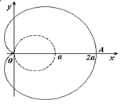

Уравнение
кардиоиды в декартовых координатах
Уравнение
кардиоиды в полярных координатах
,
Параметрическое
уравнение кардиоиды
Кардиоида является частным случаем улитки Паскаля
при .
Вершина кардиоиды находится в точке .
Укажем, что площадь кардиоиды
Площадь
кардиоиды
, а длина
Длина
кардиоиды
.